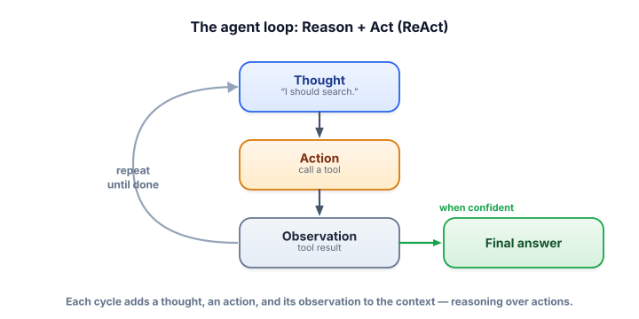

The agent loop (ReAct)
One tool call answers one question. Real tasks need several steps where each depends on the last. The agent loop — reason, act, observe, repeat — is the engine that turns a tool-using model into something that can actually solve problems.
Why a loop, and why interleave reasoning with acting
Consider “What’s the population of France times two?” The model can’t answer in one shot: it needs to look up the population (it doesn’t reliably know current figures), then do the multiplication (it’s bad at exact math). The steps are sequential and the second depends on the first’s result. That’s the loop: the model takes one action, sees the result, and only then decides the next action. The popular framing is ReAct — Reasoning + Acting — where the model alternates between a thought (what should I do next and why) and an action (a tool call), reading each observation before continuing.

The agent loop repeatedly asks the model what to do next. Each iteration is a step: the model either emits a tool call (an action), whose result (the observation) is appended to the conversation, or it emits a final answer, which ends the loop. ReAct is the pattern of interleaving explicit reasoning (“thoughts”) with these actions. A stopping condition ends the loop — either the model finishes, or a guard (like a maximum step count) trips.
Watch an agent think
Step through a real multi-step trace. Notice how each observation feeds the next thought — the model isn’t guessing, it’s building on what it learned.
ReAct trace
Goal: “What is the population of France, doubled?” — the agent has web_search and calculator.
The whole loop in ~15 lines, with a max_steps guard so it can never run away (Lesson 4.8 lives here).
import ollama
TOOLS = {"calculator": calculator, "web_search": web_search} # your real functions
def run_agent(goal, tool_schemas, max_steps=6):
messages = [
{"role": "system", "content": "Use tools to solve the task. Think, then act. Answer when sure."},
{"role": "user", "content": goal},
]
for step in range(max_steps): # the GUARD: bounded loop
msg = ollama.chat(model="llama3.2", messages=messages, tools=tool_schemas)["message"]
messages.append(msg)
calls = msg.get("tool_calls")
if not calls: # no tool → it's the final answer
return msg["content"]
for call in calls: # run each requested tool
name = call["function"]["name"]
result = TOOLS[name](**call["function"]["arguments"])
messages.append({"role": "tool", "content": str(result)}) # observation back in
return "Stopped: hit max steps." # never loop forever
print(run_agent("What is the population of France, doubled?", tool_schemas))That’s a complete agent. The loop is short on purpose — the intelligence is in the model’s choices and your tools, not in clever loop code. Everything else in this track makes this loop smarter (planning, memory) and safer (guards).
- The agent loop repeats: the model picks an action, observes the result, and decides again — until it answers.
- ReAct interleaves reasoning (thoughts) with acting (tool calls), so each step builds on the last.
- Each step appends to the context — the model reasons over a growing trace of its own actions.
- The loop ends when the model emits a final answer or a guard (like max-steps) trips.
- The loop is simple; the power is in good tools, clear prompts, and bounds.
Why does an agent loop almost always include a maximum step count?
In a ReAct loop, where do the facts in the final answer come from?
1. Trace the steps an agent with web_search and calculator would take for “How many days until the next leap year, times 3?”
2. Why does ReAct (reason then act, repeatedly) tend to beat asking the model to output a full plan and execute it blindly?
3. Your agent sometimes ends with “Stopped: hit max steps.” List two distinct causes and how you’d investigate.
▸ Show solutions & reasoning
1. Thought: I need the next leap year and today’s date → Action: web_search or compute next leap year → Observation: e.g., 2028 → Thought: days until 2028-02-29 → Action: calculator (date difference) → Observation: N days → Thought: multiply by 3 → Action: calculator(N×3) → Observation: 3N → Final answer. Each observation determines the next action — that dependency is why a loop is needed.
2. Because the real world surprises the plan. A blind upfront plan can’t adapt when a search returns something unexpected or a tool errors. ReAct lets the model see each result before choosing the next step, so it can correct course, retry, or change approach. Plans are still useful (Lesson 4.4) — but they work best when re-checked against observations, not executed sight-unseen.
3. Cause (a): the task genuinely needs more steps than the cap — raise the limit or decompose it. Cause (b): the agent is stuck in a loop — repeating the same failing action (a broken tool, bad arguments, or an observation it can’t use). Investigate by logging the full trace (every thought/action/observation): if you see repetition, fix the tool or its result formatting; if you see steady progress that just ran long, the cap was too low.
The single most useful habit for building agents is to log and read the full trace — every thought, every tool call with its arguments, every observation. Almost all agent debugging is reading traces: you’ll see the model pick the wrong tool (fix the description), pass a malformed argument (validate/normalize), misread an observation (format tool results more clearly — labeled, trimmed, structured), or loop because a tool keeps failing silently (surface the error as an observation). The model’s behavior is a direct function of what it sees in the context, and the trace is what it sees.
This also reframes “observations.” How you format a tool’s result matters as much as the result itself: a wall of raw JSON or a 10,000-token API dump will confuse the model and blow the context budget, while a concise, labeled summary (“search results: 1) … 2) …”) keeps it on track. Trim, label, and structure observations before feeding them back. And because the trace grows every step, long-running agents eventually strain the context window — which is exactly the problem memory (Lesson 4.5) solves. For now, internalize the loop and the trace: master those two and you understand 80% of agent engineering.
Looping reactively works, but for complex goals it helps to think before acting — to lay out a plan and then execute it. Next: planning & decomposition.